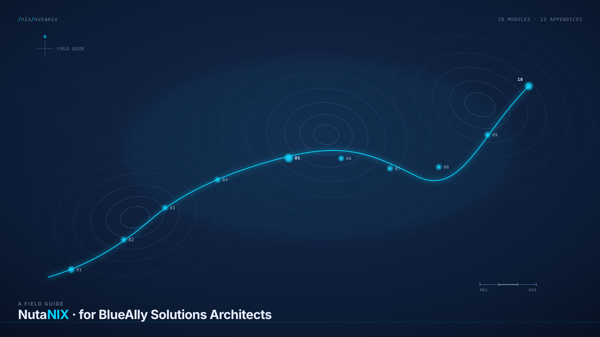

A field guideNutanix .
Written for the people who have to explain it. Cert prep, customer-conversation language,
whiteboard-ready diagrams, honest comparisons against the incumbent stacks.
$ cd /nix/nutanix
$ ls
01-hci-foundations/ 06-networking-flow/ appendix-a-glossary/
02-architecture/ 07-data-protection/ appendix-b-comparison-matrix/
03-ahv-hypervisor/ 08-unified-storage/ appendix-c-scenarios/
04-prism-management/ 09-licensing-economics/ appendix-d-objections/
05-dsf-storage/ 10-migration-path/ appendix-e-discovery-questions/
appendix-f-sizing-rules/
appendix-g-cli-reference/
$
Who this is for
You came from VMware and you need the translation layer, not a 101.You have 30 seconds between meetings and you need the answer fast.You have two hours on a Saturday and you are studying for NCP-MCI.You will be sitting across from a competing architect next week and you need real comparisons.
Ten modules
01 HCI Foundations Why hyperconverged, what it replaces. 02 Nutanix Architecture CVM, Stargate, Cassandra, Curator. 03 AHV Hypervisor The hypervisor most engineers underestimate.
04 Prism Management Element vs Central, what each is for.
05 DSF Storage Deep Dive The data path, tiering, locality.
06 Networking and Flow Microsegmentation without the theater.
07 Data Protection Snapshots, NearSync, Metro, Leap.
08 Unified Storage Files, Objects, Volumes.
09 Licensing and Economics The conversation customers want to have.
10 Migration Path Move, design tradeoffs, what goes wrong.
Site under construction
The full site is being built in phases. This holding page goes up first so the URL works.
Source and the curriculum markdown: github.com/nixfred/nutanix